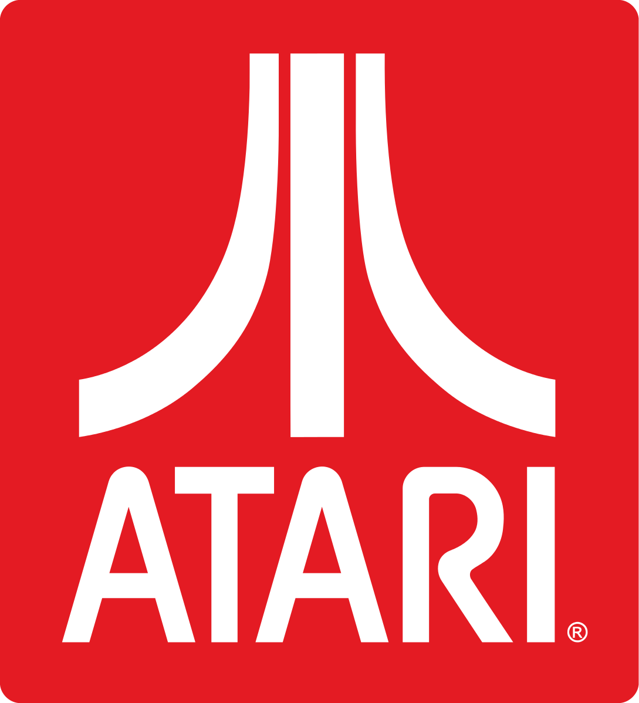

HISTORY OF ATARI
Atari was a pioneer in the field of video games, particularly in the arcade games and home consoles. Over the years, the company has changed ownership several times and was split into different companies: Atari Inc., Atari Corporation, Atari Games, and others.
ATARI Inc.
The Atari Inc. was founded in 1972 by Nolan Bushnell and Ted Dabney. The initial name that they wanted to give to the company was Syzygy, but in California this name was already used by another company so they decided to use the name of a move in Go, a Japanese game, which they often played at the time: Atari.

The first game that Atari produced was PONG, before in a coin-op version and then in a home version. It was the beginning of a decade in which video games acquired a large role in the people social life, because of the advent of arcades.
After the success of PONG and a few more games, in 1976 Bushnell decided to develop the first "Video Computer System" of the Atari: Atari 2600.
Unfortunately bringing the machine to the market would be extremely expensive for his relatively new company, so Bushnell decided to sell the entire company to the Warner Communications, which produced and sold the Atari 2600.
This was one of the most successful console of all time with over 30 million units sold, based on the 8-bit MOS Technology 6502 chip, which guaranteed high performance at low cost.

The Atari 2600 was very important because was the first console that dominated the market and up to the Nintendo Entertainment System (NES) was the only major console. For this reason, many software development companies which hoped to sell a lot, started making poor quality games for the Atari 2600. Since that the next generation consoles were not as widespread as the first, and that the first personal computers began to be produced, the consequence was that in the early 80's began a period of crisis in the field of video games: the video games crash.
In the period between the release of the Atari 2600 and 1983, Atari Inc. produced the Atari 800 and Atari 400: two consoles with the addition of specific input (such as keyboard) that never dominated the market as the previous model. A group of Atari's programmers founded the first independent developer and distributor of video games society: the Activision
ATARI Corp. and Atari Games
In 1984 Atari was in serious loss and Warner decided to sell the home computing and game console division to Jack Tramiel, the recently ousted founder of Atari competitor Commodore International, and in 1985 the software game division to Namco.
Atari, was divided into two companies: Atari Corporation (Jack Tramiel) and Atari Games(NAMCO)
Tramiel, just bought the Atari Corp. was also interested in the purchase of the new company Amiga, but at the last moment Commodore treated with Amiga to precede him in the deal and Tamriel fade the acquisition of future Amiga Computer.
Under his control were produced many computers and consoles during the 80s: the Atari ST, the Atari XE, the Atari 2600Jr and Atari 7800. Of these, only the ST model had some success (in Europe especially) due to the possibility of using the MIDI ports, but generally the Commodore Amiga was the market favorite.
In 1989, Atari decided to enter in the handheld market, first with the Atari Portfolio - the first handheld IBM-compatible PC - then with the Atari Lynx - a handheld console with color graphics. The last had some problems during the delivery of the parts and because of that Atari was not able to cover the entire market before Christmas '89, as a result, the Lynx lost market share to Nintendo's Game Boy.
During the 90s the society was merged with JT Storage Inc. and finally was sold to Hasbro Interactive.
The history of Namco's Atari Games is really short: Namco soon lost interest in operating an American subsidiary and the next year a group of Atari Games employees bought Namco's share.
Atari Games produced only games and its units, when the NES became worldwide used, under the brand name of Tengen, Atari developers began to build a chip that bypasses the controls on the NES in order to produce games units without the Nintendo permission. They developed lots of games including a version of Tetris.
In 90s Atari Games was bought from Time Warner, who created a subsidiary of its Time Warner Interactive division.
{kind=link}